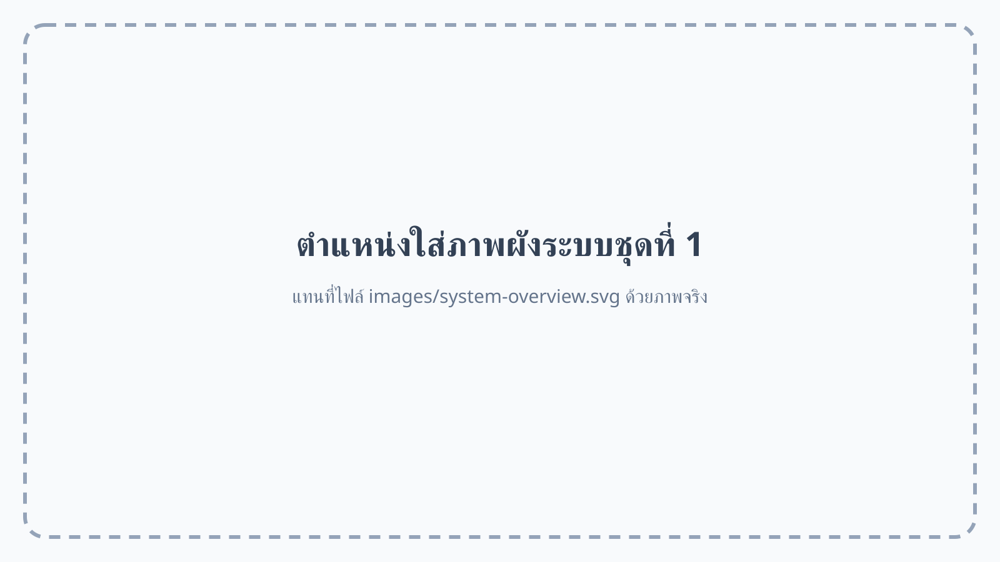

VAVE SW-42-AP
HDMI Matrix Switcher 4×2
ใช้เลือกแหล่งสัญญาณจาก 4 Inputs และกำหนดออกทาง Output A หรือ Output B ได้อย่างอิสระ
Inputs: 1 Maxhub, 2 HDMI เวที, 3 กล้อง PTZ, 4 ช่องสำรอง/Hybrid
Outputs: A ไป Splitter, B ยังไม่ใช้งานในระบบปกติ
คู่มืออธิบายแหล่งสัญญาณ การเลือกภาพด้วย HDMI Matrix Switcher การกระจายภาพ และการประมวลผลภาพสำหรับจอ LED Full Color
สามารถนำภาพไดอะแกรมฉบับสมบูรณ์มาแทนไฟล์ images/system-overview.svg
โดยใช้ชื่อไฟล์เดิม หรือแก้ค่า src ด้านล่าง

ระบบรับสัญญาณภาพจาก Maxhub, จุด HDMI บนเวที, กล้อง PTZ และช่องสำรอง เข้าสู่ VAVE SW-42-AP ซึ่งเป็น HDMI Matrix Switcher 4×2 จากนั้นส่งสัญญาณหลักทาง Output A ไปยัง CYP CPLUS-V4T เพื่อกระจายภาพไปยังอุปกรณ์แสดงผล
เส้นทางหลัก
แหล่งสัญญาณ → VAVE SW-42-AP → CYP CPLUS-V4T → TV ซ้าย / TV ขวา / LED Projector / NovaStar VX600 → LED P2.5
HDMI Matrix Switcher 4×2
ใช้เลือกแหล่งสัญญาณจาก 4 Inputs และกำหนดออกทาง Output A หรือ Output B ได้อย่างอิสระ
HDMI Splitter 1×4
รับภาพจาก VAVE Output A แล้วทำสำเนาภาพเดียวกันออก 4 ช่อง
LED Controller
รับภาพจาก Splitter ทาง Input 1 ประมวลผลให้เหมาะกับจอ LED P2.5 แล้วส่งข้อมูลออกทาง LAN ไปยังจอ LED
| อุปกรณ์ | ช่อง | การเชื่อมต่อ |
|---|---|---|
| VAVE | Input 1 | Maxhub |
| VAVE | Input 2 | HDMI เวที |
| VAVE | Input 3 | กล้อง PTZ |
| VAVE | Input 4 | ช่องสำรอง / Notebook Hybrid |
| VAVE | Output A | CYP CPLUS-V4T |
| Splitter | Out 1–4 | NovaStar / TV ขวา / TV ซ้าย / Projector |
| NovaStar | Loop | Monitor ตรวจสอบภาพจาก Input 1 |
| NovaStar | LAN | LED P2.5 Full Color |
ตรวจสอบ Source, สาย HDMI, Input ที่เลือกบน VAVE และ Output A
ตรวจสอบ Splitter Out 1, NovaStar Input 1, สาย LAN และการตั้งค่าจอ LED
ตรวจสอบสัญญาณก่อนเข้า NovaStar และสายจากช่อง Loop ไปยัง Monitor
ปัญหาน่าจะอยู่หลัง NovaStar เช่น Sending Port, LAN, Receiving Card หรือไฟเลี้ยงจอ